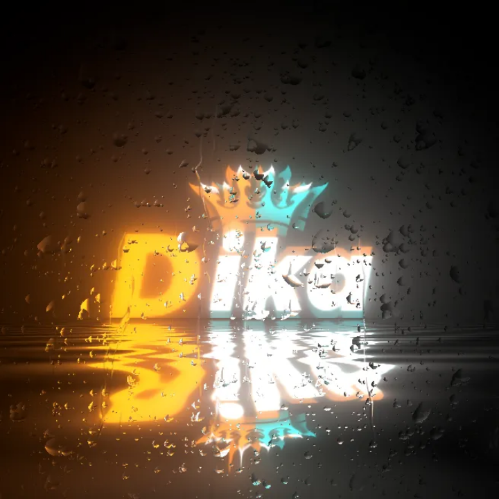

Ini adalah website pribadi resmi milik Mas Dika. Terima kasih sudah berkunjung ke website saya!

Aku sering merasa sendiri walau dikelilingi banyak orang. Kadang yang aku butuhkan cuma seseorang yang benar benar mendengar. Tapi sampai sekarang, aku masih belajar bertahan dalam sunyi yang berat ini.
Author:
Baca Artikel
Artikel tentang bagaimana cara menjaga keamanan siber dari serangan hacker!
Apa itu keamanan siber?
Keamanan siber adalah upaya untuk melindungi sistem komputer, jaringan, data, dan perangkat dari akses yang tidak sah, peretasan, pencurian, kerusakan, atau gangguan operasional. Di era digital, keamanan siber menjadi semakin penting karena hampir seluruh aspek kehidupan manusia telah terhubung dengan teknologi.
Jenis-Jenis Ancaman Siber
1. Phishing - Penipuan melalui email, situs palsu, atau pesan yang menyamar sebagai pihak terpercaya untuk mencuri data pribadi seperti kata sandi atau nomor kartu kredit.
2. Malware - Program berbahaya seperti virus, trojan, spyware, dan ransomware yang bisa merusak, mencuri, atau menyandera data korban.
3. Ransomware - Jenis malware yang mengenkripsi data korban dan menuntut tebusan untuk membukanya kembali.
4. SQL Injection - Teknik menyusupkan kode berbahaya ke dalam input database (biasanya dari form login) untuk mengakses atau merusak data.
5. Denial of Services (DoS/DDoS) - Serangan untuk membanjiri server hingga lumpuh dan tidak bisa melayani pengguna.
6. Brute Force Attack - Usaha menebak password secara berulang-ulang hingga berhasil masuk ke akun target.
7. Man-in-the-Middle (MitM) - Penyerang menyadap komunikasi antara dua pihak tanpa disadari oleh keduanya.
Contoh Kasus Nyata
Pada tahun 2017, serangan ransomware WannaCry menyebar ke lebih 150 negara, menginfeksi rumah sakit, kantor pemerintah, dan perusahaan besar. Data pengguna dienkripsi. dan penyerang meminta pembayaran dalam bentuk BitCoin.
Contoh lain adalah Kebocoran Data Tokopedia pada 2020, di mana lebih dari 90 juta akun pengguna bocor dan dijual di dark web. Kasus-kasus ini membuktikan bahwa keamanan siber bukan hal sepele.
Cara Melindungi Diri dari Serangan Siber
Gunakan kata sandi yang kuat dan unik untuk setiap akun.
Aktifkan autentikasi dua faktor (2FA) untuk keamanan tambahan.
Jangan sembarangan klik link dari email, SMS, atau website tidak dikenal.
Selalu update sistem operasi dan aplikasi secara rutin.
Hindari menggunakan WiFi publik untuk transaksi penting - gunakan VPN bila perlu.
Instal antivirus dan firewall yang terpercaya.
Etika dan Legalitas dalam Dunia Siber
Mempelajari keamanan siber adalah hal yang sah dan penting, tetapi menggunakan ilmu tersebut untuk merusak atau meretas sistem orang lain tanpa izin adalah tindakan ilegal. Di Indonesia, peretasan diatur dalam UU ITE dan bisa dikenai hukuman pidana.
Seorang ethical hacker bekerja membantu organisasi menemukan celah sebelum penjahat siber menemukannya. Itulah perbedaan antara hacker baik dan buruk.
Kesimpulan
Keamanan siber bukan hanya tanggung jawab perusahaan atau pemerintah, tetapi juga setiap individu. Semakin kita sadar akan risiko di internet, semakin kecil peluang penjahat siber untuk menyerang kita. Selalu bijak dalam menggunakan internet dan terus tingkatkan literasi digital.
Jangan tunggu sampai jadi korban. Lindungi datamu mulai sekarang.
Pilih Tema Highlight Kode
Menyesuaikan tema syntax highlight kode yang anda suka. Tersedia sampai 20 tema. 15 tema gelap dan 5 tema terang!
Kode Python
Ini adalah proyek kode python sederhana yang pernah saya buat. Program mendeteksi waktu secara real time menggunakan GUI berbasis tkinter!
# Mengimpor modul
from tkinter import Tk, Label
from time import asctime
# Membuat GUI tkinter
root = Tk()
width = root.winfo_screenwidth()
height = root.winfo_screenheight()
root.geometry(f'{width}x{height}+0+0')
root.title("Waktu Secara Real Time")
root.config(bg='black')
# Membuat teks label tkinter
label_1 = Label(text="Author: Dika", bg=root['bg'], fg='gray')
label_1.pack()
label_2 = Label(text="Mendeteksi Waktu Secara Real Time...", bg=root['bg'], fg='gray')
label_2.pack()
label_3 = Label(text="", font=('Arial', 10), bg=root['bg'], fg='gray')
label_3.pack()
# Membuat fungsi update waktu secara real time
def update_time():
show_time = "Current time: " + asctime()
label_3.config(text=show_time)
root.after(1000, update_time)
# Memanggil fungsi
update_time()
root.mainloop()
Kode HTML
Ini adalah kode html yang saya buat untuk membuat mentahan background canvas pada website untuk membuat animasi background website matrix hacker!
<!DOCTYPE html>
<html lang="id">
<head>
<meta charset="UTF-8">
<meta name="viewport" content="width=device-width, initial-scale=1.0">
<title>Matrix Hacker</title>
<!-- Menghubungkan file kode css di folder yang sama -->
<link rel="stylesheet" href="style.css">
</head>
<body>
<!-- Menambahkan tag canvas untuk membuat matrix hacker -->
<canvas id="matrixCanvas"></canvas>
<!-- Menghubungkan file kode javascript di folder yang sama -->
<script src="script.js"></script>
</body>
</html>
Kode CSS
Ini adalah kode css untuk menyesuaikan dan merapikan background matrix hacker!
/* Mereset semua elemen HTML */
* {
margin: 0;
padding: 0;
box-sizing: border-box;
overflow-x: hidden;
}
/* Mengganti warna background tag <body> HTML */
body {
background: black;
}
/* Merapikan posisi background canvas animasi matrix hacker */
#matrixCanvas {
position: fixed;
top: 0;
left: 0;
width: 100%;
height: 100vh;
z-index: -1;
}
Kode JavaScript
Ini adalah kode javascript untuk membuat fungsi animasi matrix hacker dan menampilkan background canvas!
// Menunggu elemen HTML selesai dimuat
document.addEventListener('DOMContentLoaded', () => {
// Membuat variabel matrix hacker dan background canvas menjadi fullscreen
const canvas = document.getElementById('matrixCanvas');
const ctx = canvas.getContext('2d');
canvas.width = window.innerWidth;
canvas.height = window.innerHeight;
const chars = '01';
const fontSize = 16;
const columns = canvas.width / fontSize;
const drops = [];
for (let x = 0; x < columns; x++) {
drops[x] = 1;
};
// Membuat fungsi animasi matrix hacker
function draw() {
ctx.fillStyle = 'rgba(0, 0, 0, 0.05)';
ctx.fillRect(0, 0, canvas.width, canvas.height);
ctx.fillStyle = '#0f0';
ctx.font = fontSize + 'px monospace';
for (let i = 0; i < drops.length; i++) {
const text = chars[Math.floor(Math.random() * chars.length)];
ctx.fillText(text, i * fontSize, drops[i] * fontSize);
if (drops[i] * fontSize > canvas.height && Math.random() > 0.975) {
drops[i] = 0;
};
drops[i]++;
};
// Membuat frame animasi matrix hacker sesuai dengan refresh rate pada perangkat
requestAnimationFrame(draw);
};
// Memanggil fungsi dan menampilkan background animasi matrix hacker
draw();
});
Tentang Website
Website ini dibuat dari nol oleh Mas Dika. Sempurna di semua perangkat!
Website ini merupakan proyek pribadi yang dirancang sebagai tempat belajar, berbagi ilmu, dan mengekspresikan diri. Semua konten, mulai dari desain, tulisan artikel, hingga kode pemrograman dibuat, dikelola dan dirapikan langsung oleh saya.
Dibagun manual dari nol, dengan kode: HTML, CSS, JavaScript, dan menggunakan library PrismJS untuk syntax highlight kode.
Desain responsif agar nyaman diakses melalui Desktop (PC dan Laptop) ataupun Mobile (HP dan Tablet).
Gaya minimalis, gelap, dan modern untuk menyesuaikan dengan tema hacking & teknologi. Bisa juga ganti ke mode terang.
Tujuan utamanya adalah membagikan kode pemrograman, keamanan siber, dan kisah perjalanan pribadi saya di dunia teknologi.
Terima kasih telah mengunjungi. Semoga website ini bermanfaat dan memberikan inspirasi!
Kontak Saya
Menemukan bug? Komentari saya jika ada bug di website ini atau kritik dan saran di website ini: